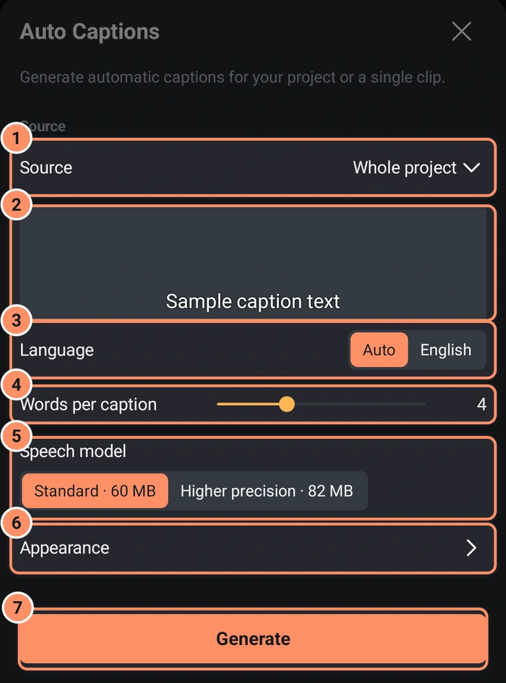

AI araçları
Otomatik altyazılar, arka plan kaldırma, gürültü azaltma, AI İyileştir ve AI Yumuşatma. Telefonunuzda çevrimdışı çalışırlar ve bu sayfa tam olarak nelerin indirildiğini söyler.
Bu sayfada
Bu sayfadaki her şey telefonunuzda çalışır. Fotoğraflarınız, videolarınız ve sesiniz asla yüklenmez. Yalnızca sonundaki tabloda listelenen indirmeler yapılır.
AI araçları üç yerdedir: Efekt Kitaplığı'nın AI kategorisi (Arka planı kaldır, Arka planı kaldır (video), Gürültüyü azalt ve İyileştir), Ekle menüsünün Altyazılar düğmesi ve bir klibin Yumuşat aracındaki ve Dışa aktarma ekranındaki yumuşatma yöntemlerinden biri olan AI Yumuşatma. Bir ses veya video klibi için AI > Otomatik altyazılar, yalnızca o klibe altyazı ekler. Ses kliplerinde ayrıca AI > Gürültüyü azalt vardır. Seçili katmana uymayan bir araç, "Bir görsel katmanı seçin" gibi bir notla grileşir. Aynı anda tek AI işi çalışır; bir ilerleme çubuğu ve İptal düğmesi görünür.
Otomatik altyazılar
Otomatik altyazılar, konuşmayı sesle aynı zamanda görünen metin katmanlarına dönüştürür.
- Bir ses veya video klibi seçin, ardından AI > Otomatik altyazı'ya dokunun. Video kliplerde ayrıca araç ızgarasının 2. sayfasında bir Otomatik altyazı düğmesi vardır. Bu yalnızca o klip üzerinde çalışır; kırpmaları ve hız değişiklikleri dahil.
- Bunun yerine tüm projeye altyazı eklemek için + > Altyazılar'a dokunun ve Tüm proje'yi seçin. Bu giriş ayrıca bir ses veya video katmanı seçmenizi sağlar.
- Aşağıdaki ayarları seçin ve Oluştur'a dokunun.

| Ayar | Seçenekler |
|---|---|
| Kaynak | Tüm proje veya listeden bir ses ya da video katmanı; adıyla gösterilir |
| Dil | Otomatik (dili konuşma belirler) veya İngilizce |
| Altyazı başına kelime | 1 ile 10 arası bir kaydırıcı (varsayılan 4) |
| Konuşma modeli | Standart (yaklaşık 60 MB, varsayılan) veya Daha yüksek hassasiyet (yaklaşık 82 MB) |
| Görünüm | Başta kapalıdır. Aşağıdaki beş satırı göstermek için dokunun |
| Yazı tipi | Yazı tipi tarayıcısını açar |
| Boyut | %50 ile %200 arası (varsayılan %100) |
| Renk | Sekiz renk örneği: beyaz (varsayılan), sarı, turuncu, kırmızı, pembe, yeşil, mavi ve siyah, ve herhangi bir renk için Özel |
| Konum | Üst, Orta veya Alt (varsayılan) |
| Kontur | Harflerin çevresinde bir kenarlık; varsayılan olarak açık. Açıkken Kalınlık (0–50, varsayılan 6) ve Anahat rengi (aynı renkler ve Özel, varsayılan siyah) görünür |
Sayfanın ortasındaki örnek altyazı, konumu da dahil olmak üzere seçtiğiniz görünümü gösterir.
Uygulama ilk seferde bir konuşma modeli indirmeden önce sorar. Standart yaklaşık 60 MB'tır. İsteğe bağlı Daha yüksek hassasiyet modeli yaklaşık 82 MB'tır. İkisi de birden çok dili destekler ve 100 MB'ın altında kalır. İndirmeler Hugging Face'teki Whisper model deposundan gelir ve kullanılmadan önce denetlenir. Tanıma daha sonra cihazınızda çevrimdışı çalışır. Ayarlar > Altyazı modelini kaldır, indirilmiş altyazı modellerini kaldırır.
Altyazılar oluşturulurken kurulum denetimleri kaybolur. Ortada geçerli aşama, ilerleme ve tahmini kalan süre görünür; tek eylem İptal'dir. Tahmin, yeterince iş tamamlandıktan sonra görünür ve değişebilir. Uzun kayıtlar on dakikalık parçalar halinde işlenir.
Sonuç, konuşmayla aynı zamanda görünen ve birlikte seçilen, her altyazı için bir metin katmanıdır; böylece stillerini değiştirebilirsiniz. Her altyazı tam zamanında, ilk kelimesi söylendiğinde başlar. Bir altyazı uzun bir duraklamada, cümle sonunda, üç saniyede veya kelime sınırında biter. Bir klip için altyazı zamanlaması, klibin projedeki konumunu izler.
Ses yoksa uygulama "Altyazıya dönüştürülecek ses yok" der; konuşma bulunamazsa "Konuşma bulunamadı" der.
Arka planı kaldır
Fotoğraflar
Bir fotoğraf katmanı seçin ve Efektler, Efekt ekle, AI, Arka planı kaldır yolunu açın. Uygulama ana konuyu keser ve resmi saydam arka planlı bir sürümle değiştirir. Özgün dosya korunur: efekt listesinde AI rozetli bir Arka planı kaldır satırı görünür ve düğmesi (Bu AI değişikliğini geri al ve orijinali geri getir) özgün resmi geri yükler.
Başlamadan önce bir iletişim kutusu fotoğrafı gösterir. Her şeyi koru (varsayılan), uygulamanın bulduğu her konuyu tutar. Yalnızca bir kişiyi veya şeyi tutmak için ona dokunun; daha fazlasını tutmak için başka yerlere dokunun ve bir noktayı kaldırmak için tekrar dokunun. Yumuşaklık, kesimin kenarını yumuşatır ve Büyüt / Küçült, kenarı birkaç piksel dışarı veya içeri taşır. Bunlar kesim yapılırken uygulanır. Değiştirmek için aynı katmanda yeniden Arka planı kaldır'ı seçin: iletişim kutusu dokunuşlarınızı ve ayarlarınızı hatırlar ve uygulama özgün fotoğraftan yeniden başlar.
Standart veya AI arka plan kaldırma 2.0
Bir fotoğraftan ilk kez arka plan kaldırdığınızda uygulama hangi kesimi istediğinizi sorar. Yanıt saklanır ve istediğiniz zaman Ayarlar, Projeler ve medya, Kesim kalitesi bölümünden değiştirebilirsiniz.
- Standart uygulamanın içindedir. Hızlıdır ve çevrimdışı çalışır.
- AI arka plan kaldırma 2.0, saç ve ince ayrıntı çevresinde daha temiz kenarlar verir. Bir kez indirilen (yaklaşık 62 MB) ve ardından çevrimdışı çalışan bir AI arka plan kaldırma modelidir; yalnızca tek fotoğraflarda çalışır; videolar her zaman Standart'ı kullanır. Uygulamanın en son sürümünü gerektirir.
AI arka plan kaldırma 2.0 indirilemezse veya bir fotoğrafı tamamlayamazsa uygulama o fotoğraf için Standart'ı kullanır ve size bildirir. Alanı yeniden boşaltmak için Kesim kalitesi altındaki AI arka plan kaldırma 2.0'ı sil'e dokunun; uygulama ardından Standart'a döner.
Videolar
Bir video katmanı seçin ve Arka planı kaldır (video)'yu seçin. Bir iletişim kutusu şöyle der: "Bu klibin her karesi bu telefonda işlenir. Sonuç, videoyu ve üstünde bir maske katmanını içeren bir gruptur." Maskenin boyutunu seçersiniz: Küçük 360p, Orta 540p (varsayılan) veya Büyük 720p; iletişim kutusu kare sayısını ve gereken depolamayı tahmin eder. Başlat'a dokunun.
İletişim kutusu ayrıca klibin ilk karesini gösterir. Her şeyi koru varsayılandır. Yalnızca bir kişiyi veya şeyi tutmak için o karede ona dokunun: uygulama dokunduğunuz parçaları tutar ve onlara dokunan her şeyle birlikte kareden kareye izler, geri kalan her şeyi dışarıda bırakır. Konu ilk karede görünür olmalıdır; bu yüzden klibi konunun göründüğü yerden başlayacak şekilde kırpın.
- Bir klip en fazla beş dakika olabilir. Daha uzun klipler için önce kırpın veya bölün.
- Uygulama maske videosu için boş depolama alanına ihtiyaç duyar ve yeterli yoksa uyarır.
- Sonuç, özgün klibi ve bir maske katmanını içeren "ad kesildi" adlı bir gruptur. Geri almak için grubu silin veya gruplamayı kaldırın; bu aracın geri yükleme düğmesi yoktur. Grubu seçin ve önizlemeyi izlerken kenarın Yumuşaklık ve Büyüt / Küçült değerlerini değiştirmek için Kesim kenarı'na dokunun; Sıfırla, kenarı yapıldığı andaki haline döndürür.
Gürültüyü azalt
Bir ses klibi seçin ve araç ızgarasında AI'a dokunun (veya AI kategorisinde Gürültüyü azalt'a). Gürültünün ne olduğunu seçin:
- Ses kaydı: "Konuşmanın arkasındaki arka plan gürültüsünü kaldırır."
- Rüzgar ve uğultu: "Düşük uğultuyu ve rüzgarı keser, ardından geri kalanı temizler."
- Müzik veya karışık ses: "Özgünün daha fazlasını koruyan hafif bir temizlik."
Başlat'a dokunun. Temizlenen ses, klip için mono olarak yeni bir ses dosyası olarak kaydedilir ve özgün ses olduğu gibi kalır: klibin efekt listesinde AI rozetli bir Gürültüyü azalt satırı ve özgünü geri getiren bir düğme görünür. Bir video için önce Sesi çıkar'ı kullanın, sonra yeni ses katmanını temizleyin.
İyileştir (video)
Bir video katmanı seçin ve AI kategorisinde İyileştir'i seçin. Ne yapmak istediğinizi seçin; her seçeneğin yanındaki ?, ne yaptığını, yaklaşık ne kadar sürdüğünü ve hangi telefonların uygun olduğunu açıklar.
| Seçenek | Ne yapar | Klip üst sınırı |
|---|---|---|
| 2 kat büyüt | Genişlik ve yüksekliği ikiye katlar ve yeni ayrıntılar çizer | 720p |
| 4 kat büyüt | Dört kat daha geniş ve yüksek; eski telefon videoları gibi küçük klipler için | 360p |
| Ayrıntıları keskinleştir | İnce ayrıntıları geri getirir ve boyutu korur | 1080p |
| Yüzleri keskinleştir | Kameraya bakan yüzleri bulur ve yalnızca onları keskinleştirir; görüntüye yumuşakça karıştırır | her boyut |
- Ayrıntıları keskinleştir için bir Hızlı, AI olmadan anahtarı vardır: bunun yerine normal Keskinleştir efektini ekler; bu anında çalışır ve her telefonda çalışır.
- Çizgi film veya animasyon, çizilmiş ve animasyonlu video için yapılmış bir model kullanır.
- Film grenini koru, daha az gürültü temizler; böylece gren ve ince doku kalır (ikinci küçük bir indirme gerektirir).
- "2 kat büyüt, 720p'ye kadar olan kliplerde çalışır" ifadesi, klibin o seçenek için çok büyük olduğu anlamına gelir; başka bir seçenek seçin veya daha küçük bir klip kullanın.
Başlamadan önce iletişim kutusu telefonu denetler ve süreyi tahmin eder; örneğin "Bu klip için yaklaşık 4 dk", "Bu telefon büyük olasılıkla zorlanacak: yaklaşık 2 sa" veya "Bu telefon bunu çalıştıramaz". Model indirildikten sonra küçük bir test karesiyle hızı ölçer; böylece tahmin iyileşir. Başlat'a (ilk seferde İndir ve başlat'a) dokunun.
Her kare bir kez işlenir ve klip için, klibin sesiyle birlikte yeni bir video olarak kaydedilir. Yalnızca klibin kırpılmış kısmı işlenir ve bir klip en fazla beş dakika olabilir. Çalışırken ekran açık kalır, istediğiniz zaman iptal edebilirsiniz ve telefon çok ısındığında uygulama duraklar. Özgün korunur: klibin efekt listesinde AI rozetli bir İyileştir satırı ve özgünü geri getiren bir düğme görünür; Geri al da çalışır.
AI İyileştir kasıtlı olarak yavaştır: gerçek ayrıntı çizer. Yeni bir üst düzey telefonda, 540p videonun 10 saniyesi 2 kat büyüt için yaklaşık 5 ila 10 dakika sürer; orta seviye ve daha eski telefonlar çok daha uzun sürer. Kısa klipler en uygunudur.
AI Yumuşatma
AI Yumuşatma, bir AI modeliyle aradaki kareleri çizer. Hızlı harekette ve beliren veya kaybolan kenarlarda Optik akıştan daha iyi başa çıkar, ancak çok daha yavaştır. Bir klibin Yumuşat aracında yöntem olarak (bkz. Fotoğraflar, video ve hız) veya dışa aktarırken Kare ara değerleme yöntemi olarak (bkz. Dışa aktar) seçin.
- Düşük, daha hafif bir model kullanır ve İyi telefonlara uygundur.
- Orta, başlanması gereken modeldir.
- Yüksek, en zor sahneler için daha büyük bir model kullanır; bunu Hızlı telefonlar veya kısa klipler için saklayın.
Her düzeyin kendi modeli vardır ve uygulama boyutunu gösterdikten sonra bir kez indirilir (yaklaşık 11 MB). İletişim kutusu ve Dışa aktarma ekranı telefon denetimini ve süre tahminini gösterir. Yeni bir üst düzey telefonda, 30 ila 60 fps'te 1080p videonun 10 saniyesi yaklaşık yarım dakika ila bir dakika sürer; Temel telefonlar 10 dakika veya daha fazla sürebilir.
Ayarlar'daki AI modelleri
Ayarlar, Projeler ve medya, indirilmiş her AI modelini boyutuyla ve bir Sil satırıyla listeler. Silinen model, bir sonraki ihtiyaçta yeniden indirilir.
Neler indirilir
| Öğe | Ne zaman | Boyut | Kaynak |
|---|---|---|---|
| Altyazılar için konuşma modeli | İndirmeyi onayladıktan sonra | yaklaşık 60 MB Standart veya 82 MB Daha yüksek hassasiyet | Hugging Face |
| Arka plan kaldırma modeli | Asla: uygulamanın içindedir | yaklaşık 3 MB | |
| Gürültü azaltma | Asla: uygulamanın içindedir | ||
| AI İyileştir modelleri | İyileştir'i ilk kez kullandığınızda, İndir ve başlat'a dokunduktan sonra | yaklaşık 2,4 MB (çizgi film 1,3 MB, film greni 2,4 MB daha) | bu projenin GitHub sürümleri |
| AI arka plan kaldırma 2.0 | AI arka plan kaldırma 2.0 ile ilk kez arka plan kaldırdığınızda | yaklaşık 62 MB | bu projenin GitHub sürümleri |
| AI Yumuşatma modelleri | AI Yumuşatma'yı bir düzeyde ilk kez kullandığınızda | düzey başına yaklaşık 11 MB | GitHub (rife-ncnn-vulkan projesi) |
| Yüzleri keskinleştir | Asla: Android'in kendi yüz bulucusunu kullanır |
Her model kullanılmadan önce sabit bir parmak izine (SHA-256) karşı denetlenir; hasarlı bir dosya silinir ve yeniden indirilir. AI için başka hiçbir şey indirilmez. Gizlilik sayfası internetin her kullanımını listeler.
Hız
Yeni bir telefonda kısa bir klip saniyeler ila dakikalar sürer; uzun bir video veya daha eski bir telefon daha uzun sürer. Bir araç çalışırken uygulamayı açık ve ekranı açık tutun.
AI Yumuşatma ve AI İyileştir çoğu telefonda telefonun işlemcisinde çalışır. Bunlar için güvenli olduğu bilinen daha yeni grafik yongaları (son Snapdragon ve Mali yongaları) bunun yerine kullanılır; çünkü çok daha hızlıdırlar ve süre tahminleri işi yapacak yongayı izler. Ayarlar, Projeler ve medya içindeki AI için grafik yongasını kullan bunu açar veya kapatır. Başka bir yonga için açmak önce bir uyarı gösterir: bazı telefonlarda tüm telefonu dondurabilir ve yeniden başlatmadan sonra AI yeniden işlemciyi kullanır. Grafik yongasındaki AI işi herhangi bir nedenle başarısız olursa veya kesilirse uygulama bunu söyler ve o andan itibaren işlemciyi kullanır.